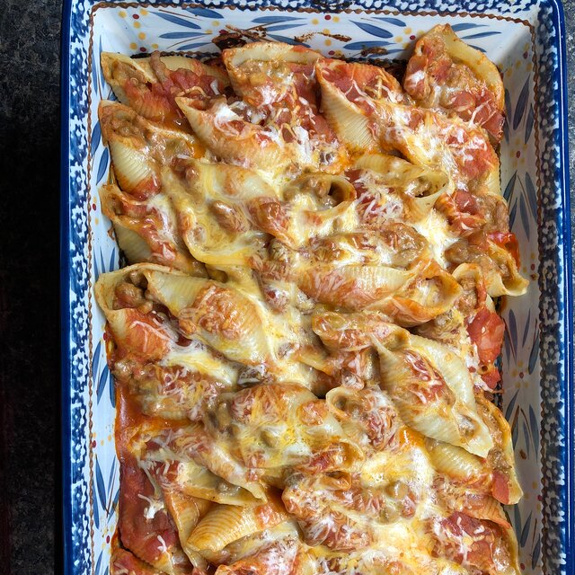

Mexican Stuffed Shells

Mexican stuffed shells with cilantro garnish
This is one of my favorite recipes! I love to make this to take to parties or for dinner at home. It takes a while to make, but is always worth the time and effort!
Ingredients
- 1 lb Chicken
- 1 pk Taco Seasoning
- 1 pkg Jubmo Shells
- 1 jar Salsa
- 8oz Pepperjack, cut into small cubes
- 8oz Cream Cheese, softened
- 4 Green Onion, diced
- 2 teaspoons Cilantro, minced
- 2 teaspoons Garlic Powder
Steps
- Cut chicken into 1 inch pieces and cook in skillet until done.
- Add taco seasoning and cook per directions on packet.
- Cook shells as directed on package.
- Heat oven to 350
- Add salsa to a large casserole dish
- Add remaining Ingredients to a stand mixer along with the seasoned chicken. Mix untill fully combined.
- Stuff shells with chicken mixture and place in casserole dish.
- Cover with foil. Bake for 20 minuets.